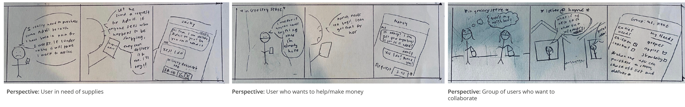

P R O D U C T D E S I G N
CartShare
A platform that connects users in similar areas to promote collaboration on grocery tasks during the pandemic.
Role
- Product Design
- Solo Project
Tools Used
- Adobe XD
- InVision
- Photoshop
Duration
- 2 weeks

O V E R V I E W
Context
The final assignment in the UI/UX course I took in Spring of 2020 was to develop a prototype for an app of our choice. The only requirement was that the app’s purpose must specifically address any issue related to equity in our society, culture, or world that is in need of a solution.
At the time of this project’s release, the concern over COVID-19 had rapidly intensified and taken an effect over our daily routine and thought. I remember feeling worried because access to basic materials like masks and hand sanitizer suddenly felt beyond reach (sold out/surged prices), but going outside was unavoidable because all delivery services for grocery shopping were filled for weeks.
The “I wish we could have ____ to make this better” thoughts encouraged me to choose COVID-19 as my topic for this project so that I could explore one in its entirety and create a solution that could help the community.
App Proposal
Challenge

Solution
This app intends to provide an opportunity for the community to come together online and help limit these grocery/drugstore trips by collaborating on tasks. This neighborhood collaboration will allow individuals, who are able to pick up additional items, fulfill the needs of others in their community. This app also allows individuals to request groceries/supplies if they are not able to leave their homes. Lastly, this app can be utilized for individuals interested in making groups to collaborate on grocery tasks.
I D E A T I O N
SWOT Analysis
The objective of this app is to be a beneficial addition for the community. With this in mind, I felt that it would be helpful to conduct a SWOT analysis on this app to identify the potential strengths and weaknesses within different functioning components as well as how it will exist alongside existing apps.
Required Functions
After reviewing the main functions that are necessary for the app to fulfill its intended purpose, I identified what components must be included on the interface to carry them out.
1
User Home Page: In order for the user to keep track of their personal activity, having a main page to manage their account is a necessity.
2
User Requests: List formatted page for user to add items to their list that they wish to request
3
User Groups: Chat formatted page for users to create groups and communicate with one another in the groups they are a part of
4
Community Groups: Search formatted page for user to discover existing public groups in their area
5
Maps: Feature for user to save and locate addresses of group members they wish to wish to engage with
Interface Development
Designing the first draft of the interface was mainly an experimentation of combining layouts/processes of existing apps to curate a product that people would be able to intuitively engage with. Because this app requires elements of communication and searching through items, analyzing the flow of existing apps that do this particularly well was necessary to understand what expectations a user already has for how this app ought to function.
For example, in the “Your Groups” feature, I incorporated similar text hierarchy and visual placement of features from Apple Messages to create an interface that people are familiar with to reduce the time needed to figure out how to use it. That way this app can be intuitive and understandable while also being a new tool a user has not been exposed to before.
These designs were refined through a series of three major critiques from the peers in my class. Suggestions and comments were made on both the functionality of the app as well as the visibility and placement of text/features.
P R O T O T Y P E
Highlighted Features
01
Your Requests
This feature consists of two functions: storing requests and searching items.
This serves as a way for the user to see what items they’ve added as well as its status (pending meaning request has yet to be fulfilled and complete meaning request has been fulfilled).
In the process of adding an item, a user can see the price as well as the store locations where it is available. The store location was important because the goal of the app is to maximize the efficiency of trips to the store. By knowing if the item at a select store is in stock in advance, the user can form better judgement on what action to take.
02
Your Groups
This feature serves as a communication tool for the user as well as where members in a group can compile their requests together.
- Messages - I included a Messages section to allow the user to communicate with the members in the groups they are in. This serves as a way for users to sort out details of their plans.
- Item Checklist - The second section allows the user to see the collaborative list of items. The default order of items is from newest to oldest and the three buttons serve to allow the user to categorize/organize the items in different ways for their convenience.
The "$" feature lets the user select items and see the subtotal of them (left figure). The purpose of this is for the user to see how much items cost together. That way, for instance, if a user purchases items for someone else in the group, they can easily calculate how much those items cost in total to identify how much money to request.
"The sorting feature allows the user to reorganize how the items appear on the checklist. They can sort items by group member (middle figure) to clearly see who added what. They can also sort by store (right figure), where the user can view which stores carry the most amount of items on the checklist - this serves again as a way to maximize efficiency of trips.
The plus feature allows the user to either import items from their existing personal requests or search for an item in the same manner as creating a request.
03
Community Group & Maps
The community feature serves as a resource for users to explore existing public groups that are nearby their location.
Users can discover groups by either using the search feature or by viewing suggested groups that are curated by their area and mutual group members.

R E F L E C T I O N
This project was interesting for me because it was the first time that I came up with an idea for an app and implemented it to the level of prototyping. I learned quickly that the components that I identified that were necessary for the app was just a fraction of the logistics I had to sort out. Simple features like “cancel” to get a user out of the middle of a process were just as important to consider in order to account for all possibilities of user actions.
I also learned how valuable getting feedback from others was from this project. Just being able to see my classmates interact with my prototype and noting their response time to certain features was extremely helpful in figuring out what areas were not quite clear yet. The more intuitive my application is, the more time my user has to engage with the features of the app, hopefully fulfilling their needs. Reducing cognitive load definitely stood out in this project as an important process to undergo during the iterations of the app.